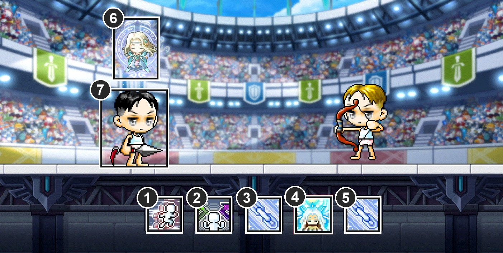
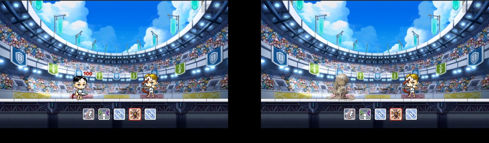
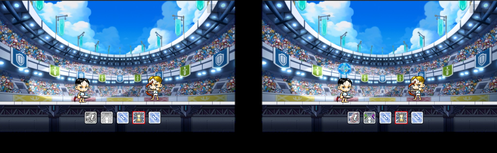
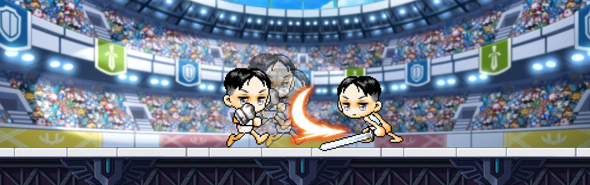
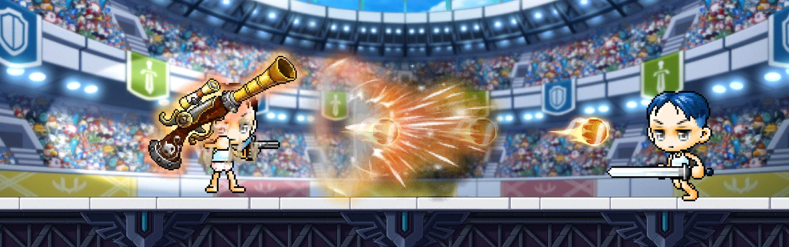

2.1 스킬 슬롯과 상세 스킬 조건

원본 기획서 수록 전투 캡처에 번호 표시. 아이콘은 캡처 당시 장착 상태다. 6 여제의 축복 이펙트, 7 플레이어.
| IDX | 키, 스킬과 결정 방식 |
|---|---|
| 1, 2 | Shift 대시, C 방향전환. 공통 기본, 피해 없는 위치 조정 |
| 3 | A 직업 고유 스킬. 직업 선택 시 고정, 시전 딜레이 없음 |
| 4, 5 | S, D 무기 스킬. 선택 라운드에서 3장 중 택1, 1차는 4번, 2차는 5번, 교체 불가 |
● 공용 무기 스킬 4종, 강화 없이 선택 가능, 무기 모션 미사용
| 스킬 | 효과 조건 | 예외 처리 | 연출 |
|---|---|---|---|
| 석화 | 2초간 이동, 공격 정지. 무적이며 피해와 대상 지정을 받지 않고 밀림에 면역 | 투사체는 석상에 막히지만 피해는 없다. 부딪힌 상대와 석상 모두 밀리지 않는다. | 시전 위치에 먼지구름 1회, 석상이 깨지는 클립을 2초로 재생 |
| 타임 리프 | 대시와 방향전환을 다시 사용 가능 상태로 변경 | 두 스킬이 이미 활성이어도 사용되며 이펙트만 재생 | 머리 위에 시계 이펙트 1회 |
| 여제의 축복 | 최대 체력 15% 즉시 회복, 이동 정지와 스턴 등 상태이상 해제 | 스킬 사용 자체를 막는 침묵은 해제 불가 | 머리 위에 버프 이펙트 1회 |
| 저주의 사슬 | 5초간 상대 최대 체력 10% 피해(초당 2%), 회복 수치 50% 감소 | 유물 효과, 흡혈 등 모든 회복 수단에 적용 | 상대 발밑 시전 1회, 머리 위 디버프 5초 반복 |


● 직업 고유 스킬 8종
| 직업 | 고유 스킬 | 효과 | 이동, 기본 공격 |
|---|---|---|---|
| 히어로 | 돌진 | 전방 돌진, 부딪힌 적 최대 체력 10% 피해 | 돌진, 정지 |
| 팔라딘 | 소울실드 | 3초간 받는 피해 50%, 주는 피해 15% 감소 | 유지, 유지 |
| 나이트로드 | 윈드 탈리스만 | 피격 적 방향전환과 넉백(중), 피해 없음 | 유지, 유지 |
| 섀도어 | 인투 다크니스 | 적 뒤로 순간이동, 2초간 공격속도 10% 증가 | 순간이동, 유지 |
| 캡틴 | 헤드샷 | 최대 체력 10% 피해와 1초 스턴, 사거리 무제한 | 정지, 정지 |
| 바이퍼 | 윈드 점프 | 제자리 점프 중 무적, 피격 적 3초 침묵 | 제자리, 정지 |
| 비숍 | 홀리 심볼 | 적 2초 이동 정지, 확정 적중, 피해 없음 | 유지, 유지 |
| 보우마스터 | 퀴버 플로우 | 잔상 설치, 재사용 시 순간이동 | 순간이동, 유지 |
% 수치는 원문의 초기값이다. 침묵은 스킬만, 이동 정지는 이동만, 스턴은 모든 조작을 막는다.

